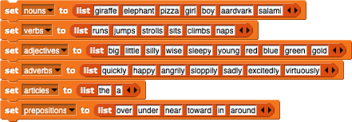
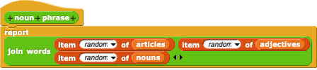

Let's say you're writing a program to generate English sentences. Your starting point might be various lists of words:

List items are numbered from 1, so, for example, item 3 of the nouns list above is pizza. The first input slot accepts a number like other rounded input slots, but it also has a downward arrow that, when clicked, offers two special choices: last for the last item of the list, and any to pick an item at random.
The second input slot in the item block is something you haven't seen before: a rectangle with two orange smaller rectangles inside it. Just as a rounded input slot indicates that a number is expected, and a hexagonal input slot indicates that a true or false value is expected, this new kind of input slot means that a list value is expected. It's meant to look like what you see when you say a list: a grey (rounded) rectangle with red-orange rectangles for the individual items.
Use the item any feature to make a noun phrase by choosing a random article, a random adjective, and a random noun:

Try this:
Create blocks prepositional phrase, verb phrase, and anything else you need, ending with a sentence block that reports sentences like "the little elephant runs excitedly around the big pizza." Can you improve on this so that the sentence structure varies, sometimes including people's names instead of article-adjective-noun phrases, for example? You might want different sentence structures for transitive and intransitive verbs. This is an open-ended project!